Deskpost for Mac
Mac に入れると、iPhone の Deskpost からこの Mac のファイルを開けるようになります。
Deskpost は、iPhone と Mac の両方に入れて使います
AirDrop、メッセージ、メールで送れます。
Mac での手順はこの下にあります。先に目を通しておけます。
いまは配布の準備をしています。準備ができたら、このボタンからダウンロードできます。
- 所要時間 約5分
- macOS 13 以降（Apple シリコン）
- Apple の公証済み
途中で、Mac からこんな確認画面が出ます。下のボタンを押して進めてください。
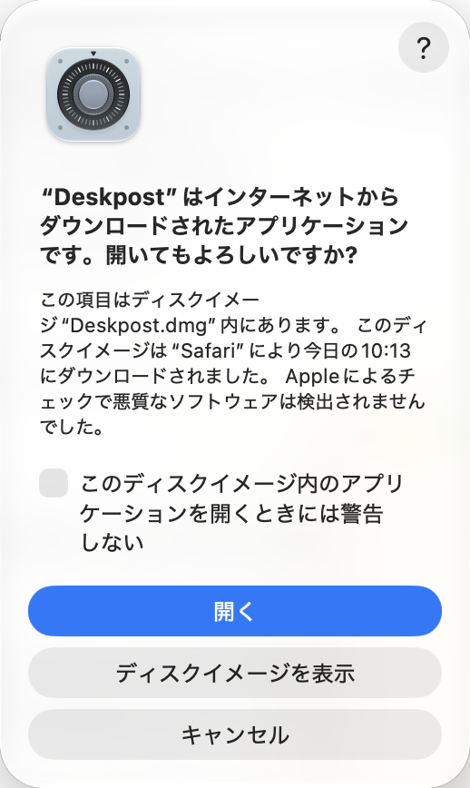
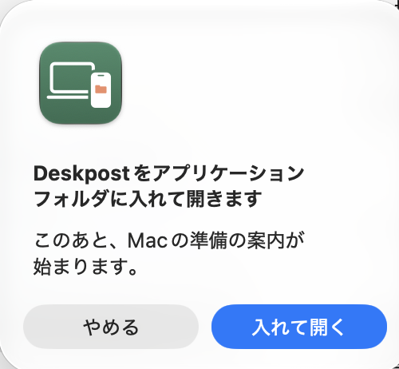
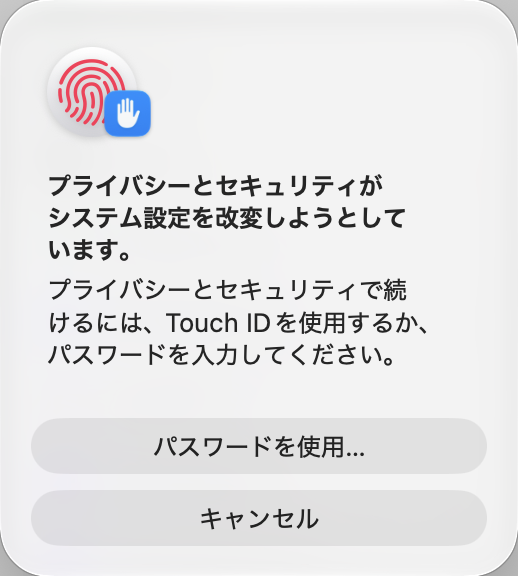
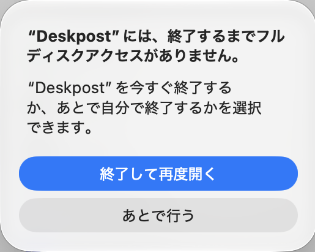
ほかに、クラウドやローカルネットワークの確認画面が出たら［許可］を押してください。
1アイコンをダブルクリック
ダウンロードした Deskpost.dmg を開くと、この画面が出ます。
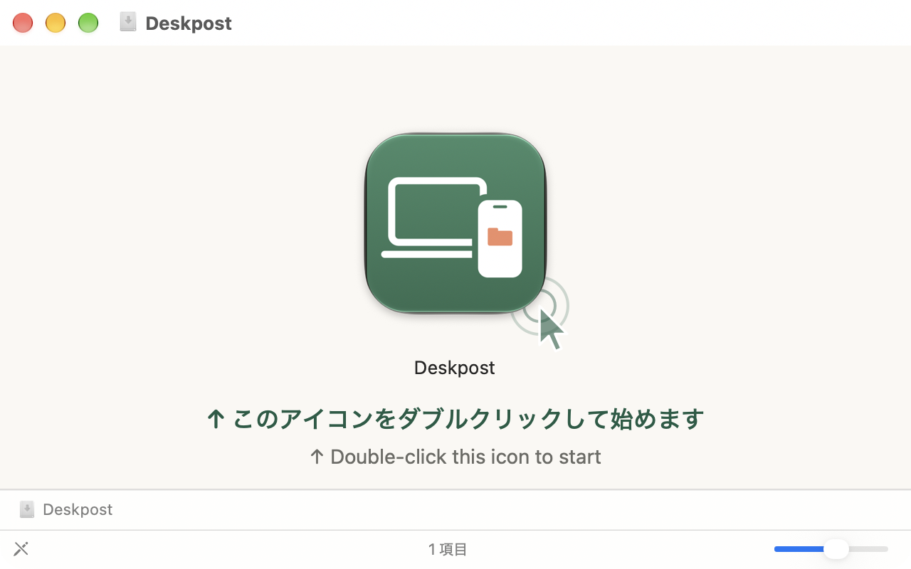
2［はじめる］
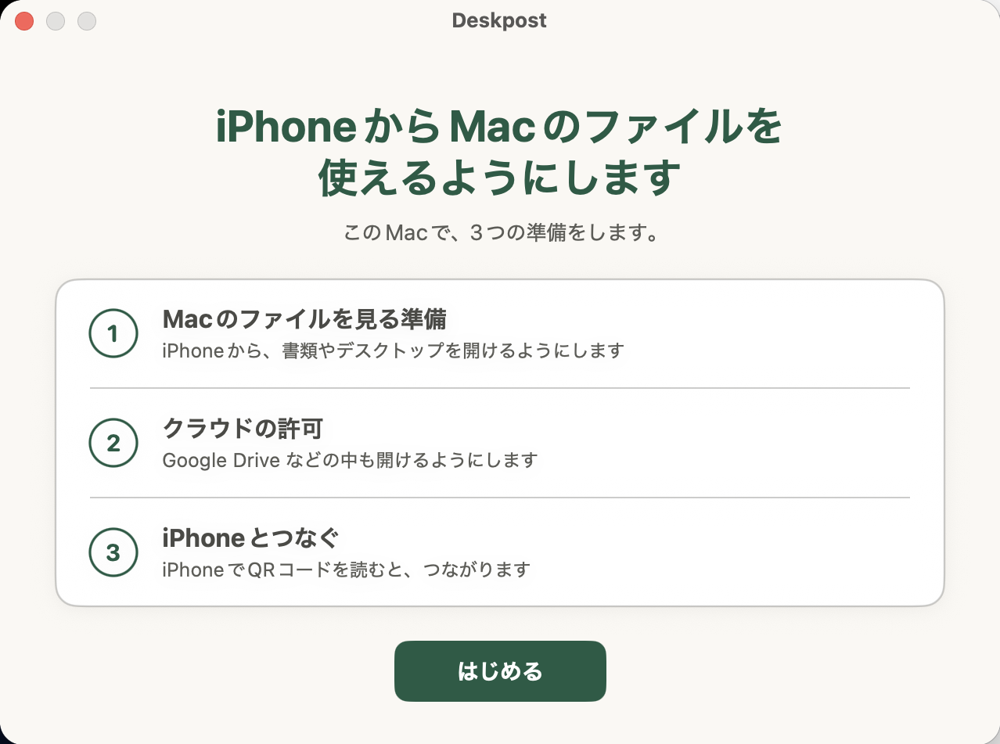
3Mac の設定で Deskpost をオンにする
［システム設定を開く］を押したら、Deskpost のアイコンを一覧にドラッグして、スイッチをオンにします。
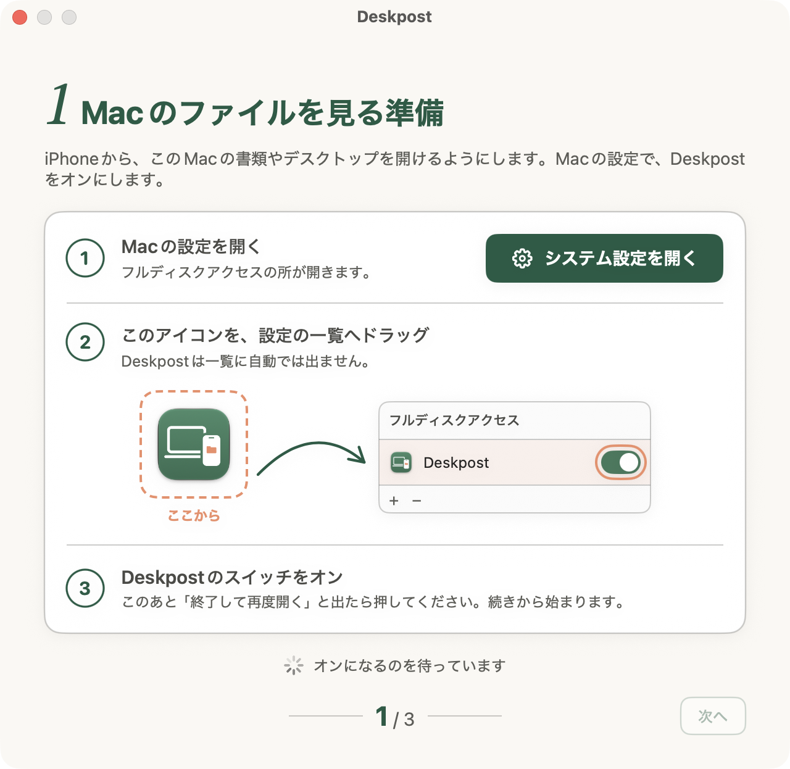
4使うクラウドを選ぶ
使うクラウドは［許可する］、使わないクラウドは［使わない］を押します。あとから変えることもできます。
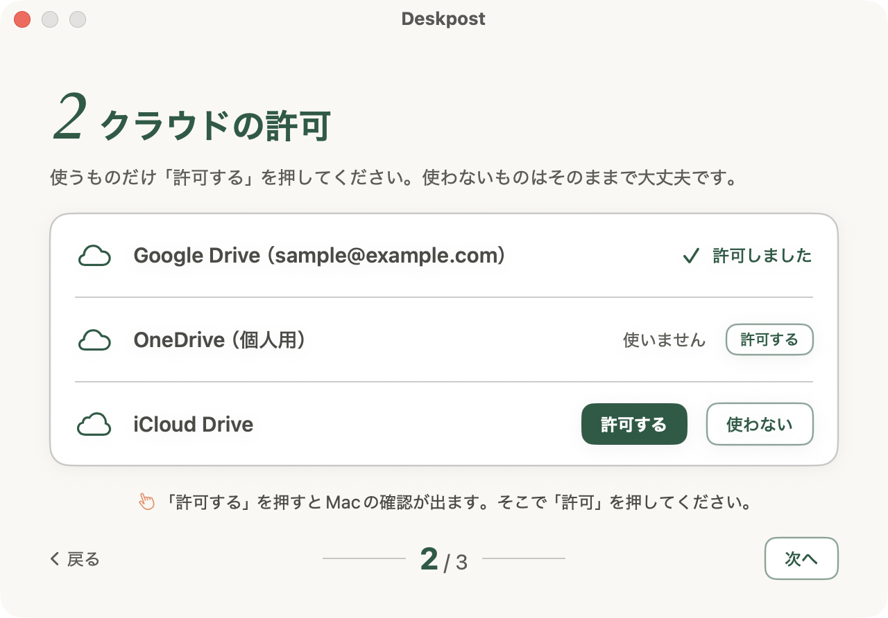
5iPhone で QR コードを読む
iPhone の Deskpost で［QR コードを読む］を押して、Mac に出ている QR コードを読み取ります。
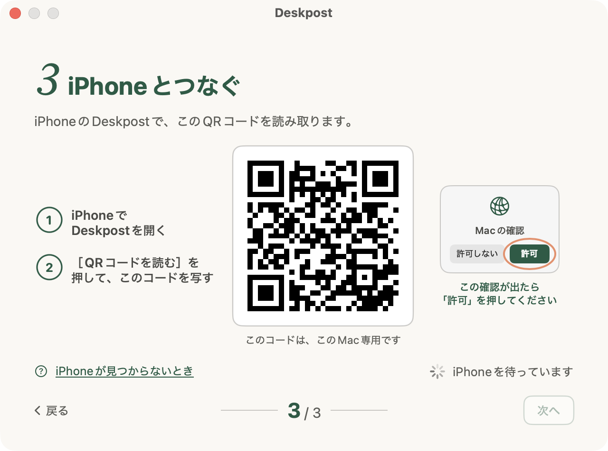
「つながりました」と出たら完了です。
使い始めてから
メニューバーの Deskpost
画面右上の Deskpost のアイコンから開けます。
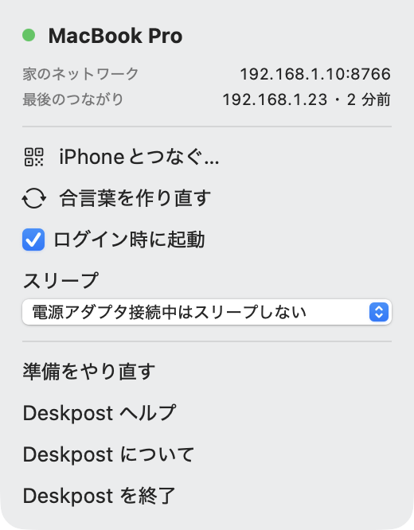
- iPhoneとつなぐ…：別の iPhone をつなぐときの QR コードを出します
- 合言葉を作り直す：今つないでいる iPhone との接続を切ります
- ログイン時に起動：チェックを入れると、Mac を起動したときに自動で立ち上がります
- 準備をやり直す：最初の設定をもう一度やり直します
- Deskpost ヘルプ：このページを開きます
うまくいかないとき
- 確認画面で［許可しない］を押してしまった：メニューの「準備をやり直す」から、もう一度設定できます。
- iPhone からつながらない：Mac と iPhone を同じ Wi-Fi につないでください。それでもだめなら、iPhone の「設定」→「Deskpost」で「ローカルネットワーク」がオンになっているか確かめてください。
iPhone 側の使い方は、サポートをご覧ください。
Deskpost for Mac
Install this on your Mac, and Deskpost on your iPhone can open the files on this Mac.
Deskpost runs on both your iPhone and your Mac
Send it with AirDrop, Messages or Mail.
The steps for your Mac are below, so you can read them first.
The download is being prepared. Once it’s ready, you can get it from this button.
- Takes about 5 minutes
- macOS 13 or later (Apple silicon)
- Notarized by Apple
Your Mac will ask you to confirm a few things along the way. Click the button shown under each one.
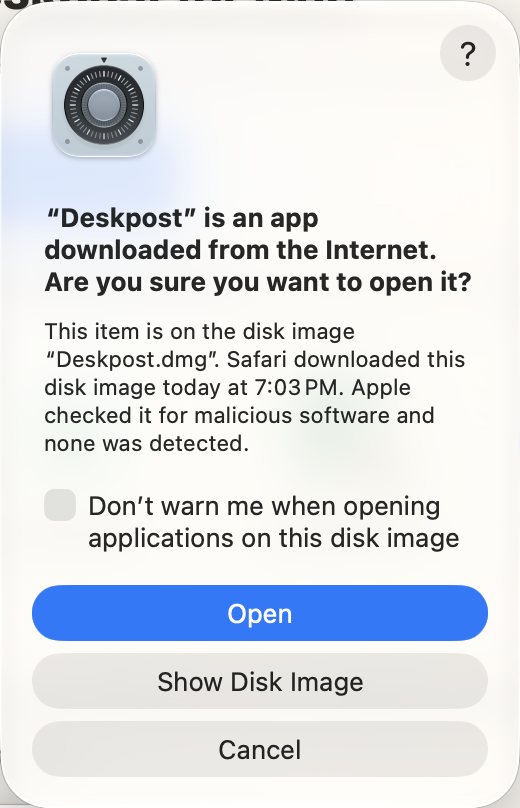
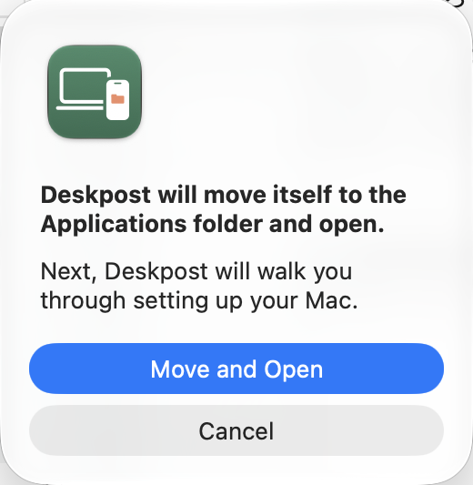
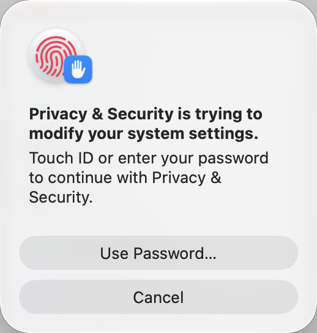
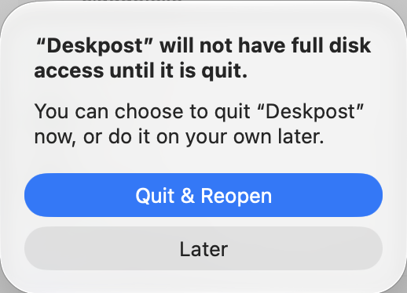
If you’re also asked about cloud storage or the local network, click “Allow”.
1Double-click the icon
This window appears when you open the downloaded Deskpost.dmg.
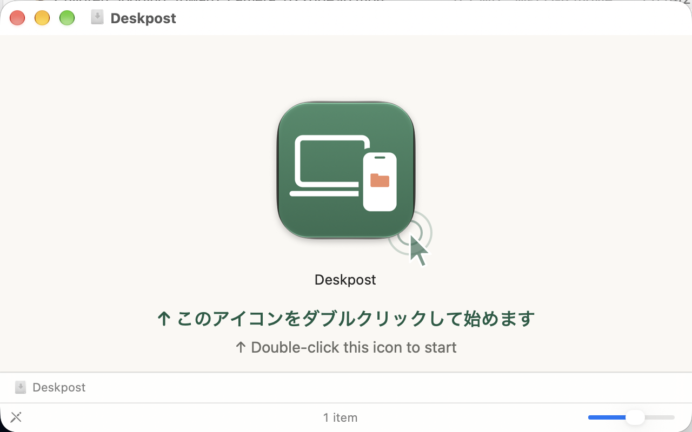
2Click “Get Started”
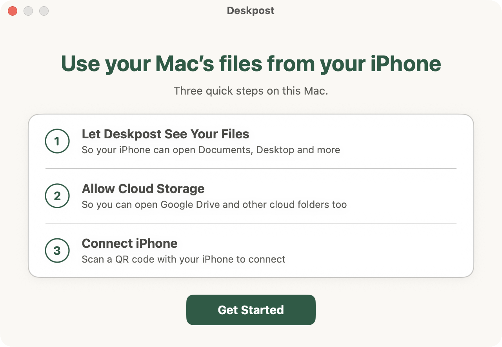
3Turn on Deskpost in System Settings
Click “Open System Settings”, drag the Deskpost icon into the list, and turn on its switch.
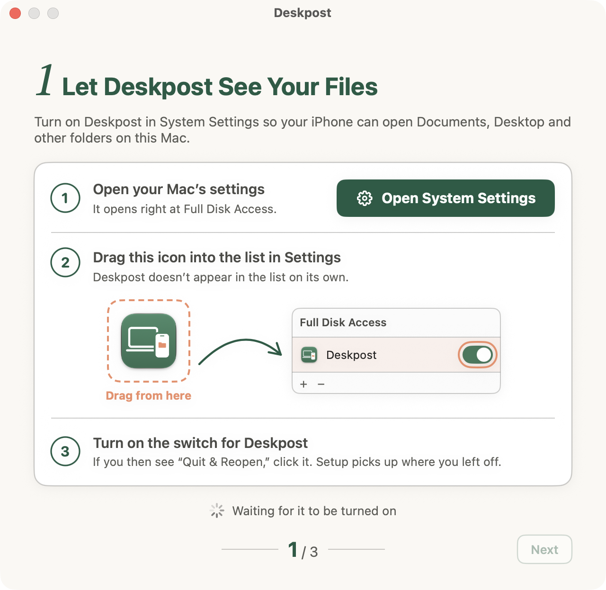
4Choose your cloud storage
Click “Allow” for the ones you use and “Skip” for the rest. You can change this later.
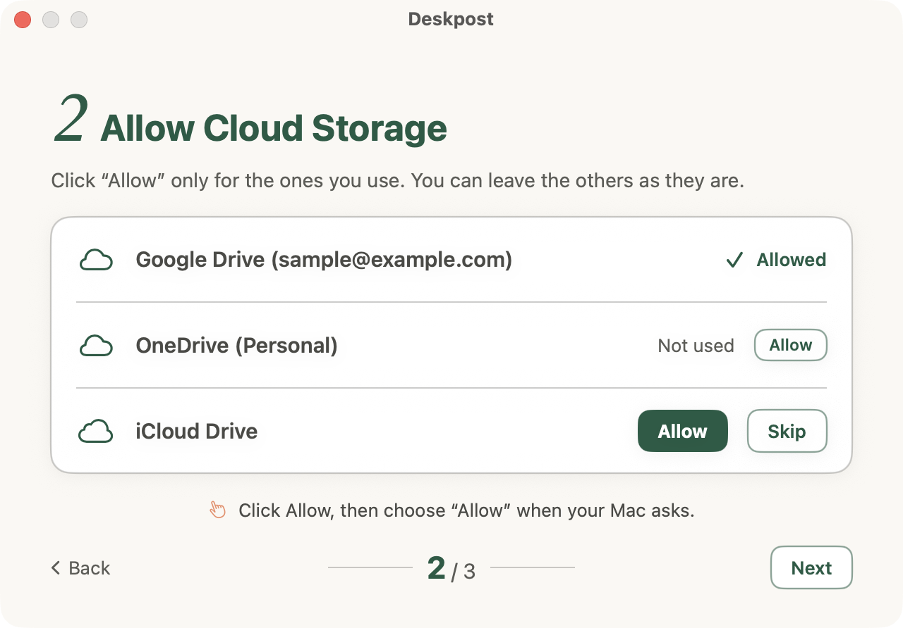
5Scan the QR code with your iPhone
In Deskpost on your iPhone, tap “Scan QR Code” and point it at the QR code on your Mac.
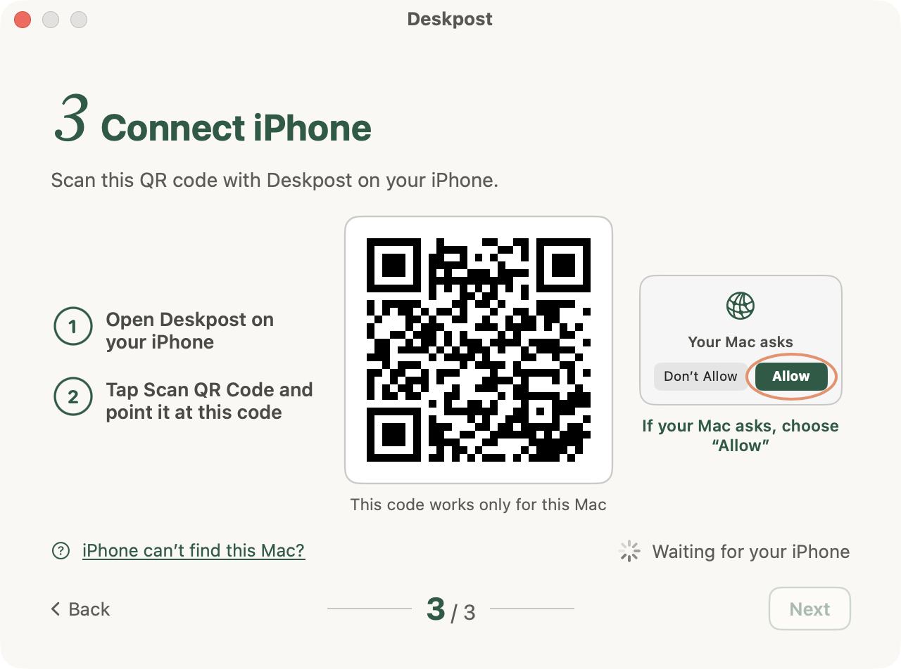
When you see “You’re Connected”, you’re done.
After setup
Deskpost in the menu bar
Click the Deskpost icon at the top right of your screen.
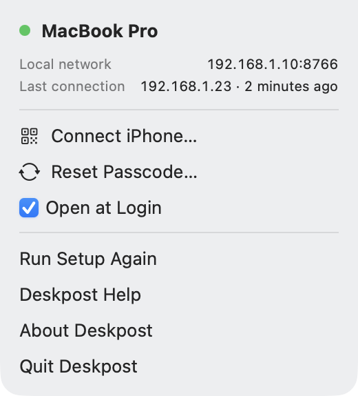
- Connect iPhone…: shows the QR code for connecting another iPhone
- Reset Passcode…: disconnects the iPhones connected now
- Open at Login: when checked, Deskpost starts when you start your Mac
- Run Setup Again: goes through the setup from the beginning
- Deskpost Help: opens this page
If something goes wrong
- You clicked “Don’t Allow” by mistake: choose “Run Setup Again” in the menu to set it up again.
- Your iPhone can’t connect: make sure your Mac and iPhone are on the same Wi-Fi. If that doesn’t help, check that “Local Network” is on in iPhone Settings → Deskpost.
For how to use the iPhone app, see Support.